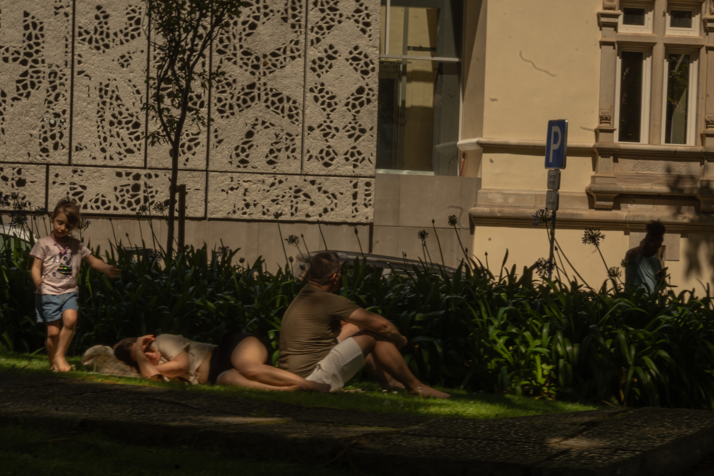

Pulitzer-winning novelist Viet Thanh Nguyen. (for Daily Trojan)

Dodgers parade.

Torre de Belém, Portugal.

Bom Jesus do Monte, Braga, Portugal.

Jardim do Morro, Portugal.
Jardim do Morro, Portugal.
Santa Monica State Beach Pier, Santa Monica, California.

Lisbon, Portugal.

Los Angeles City Controller Kenneth Mejia at a canvass launch for L.A. City Council candidate Ysabel Jurado, Eagle Rock, California. (for Daily Trojan)

Dean of USC Architecture Brett Steele in his office. (for Daily Trojan)

Bovard Auditorium, University of Southern California. (for Daily Trojan)
"Solidarity Sukkah" hosted by Jewish Voice for Peace, outside Trousdale North Entrance, University of Southern California. (for Daily Trojan)

Monterey, California.

Protest to reinstate Asna Tabassum's valedictory address, University of Southern California. (for Daily Trojan)

Cascais, Portugal.

Brooklyn Bridge, New York.

Protest for Gaza, University of Southern California. (for Daily Trojan)

Protest to reinstate Asna Tabassum's valedictory address, University of Southern California. (for Daily Trojan)

Porto, Portugal.

Descanso Gardens, La Cañada Flintridge, Los Angeles County, California.

Castelo dos Mouros, Sintra, Portugal.